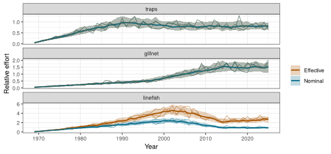
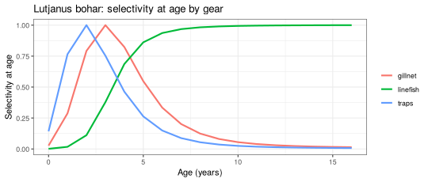
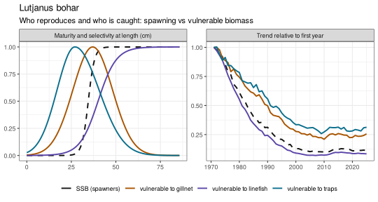
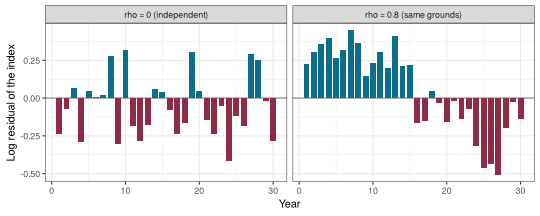
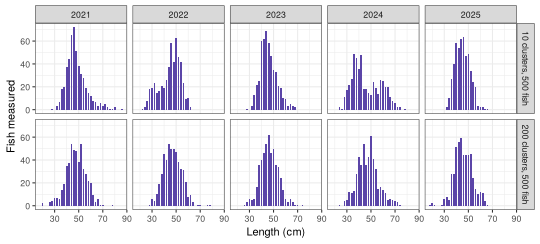
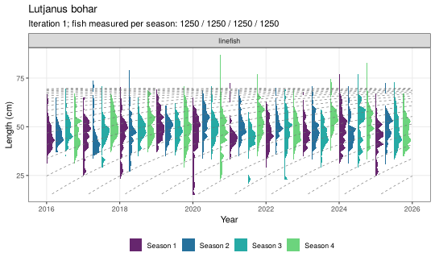

This appendix describes how FLOSS simulates a fishery and its data, step by step, with the equations behind each step. Each section starts with the idea in plain words, then gives the equations, then a short R example. The order follows the flow of the app and of a FLOSS run:
1 Effort by gear -> 2 Fishing mortality by gear and species -> 3 Biology and MSY calibration
-> 4 Age-structured dynamics (the truth) -> 5 Treatments -> 6 Sampling (the data)FLOSS is built on FLR (Kell et al. 2007): FLife for life
histories, FLBRP for equilibrium and reference points,
FLasher/FLCore for the projections and
FLRef for selectivity, gear length keys and length
sampling. The notation is summarised in the last section.
1 Effort by gear
Idea. A fishery has one or more gears (fleets). Each gear has a history of nominal effort: low in the first (unfished) year, rising to a peak, then moving to a later level. Effort varies from year to year, and the same variation is felt by every species the gear catches. Fishing power can also creep up over time without showing in the reported effort.
Effort trend. For gear \(f\) with start level \(e_0\), peak \(e_{hi}\), later level \(e_{lo}\), first year \(y_0\) and change years \(y_1 < y_2\), the expected relative effort is piecewise linear:
\[ \bar E_{f,y} = \begin{cases} e_0 + (e_{hi} - e_0)\,\dfrac{y - y_0}{y_1 - y_0} & y_0 \le y \le y_1 \\[2mm] e_{hi} - (e_{hi} - e_{lo})\,\dfrac{y - y_1}{y_2 - y_1} & y_1 < y \le y_2 \\[2mm] e_{lo} & y > y_2 \end{cases} \]
(the up-down-constant shape of FLRef::fudc(); any vector
of values can be given instead).
Year-to-year variation. Realised nominal effort in iteration \(i\) is the trend times a lognormal deviation with mean 1:
\[ E_{f,y,i} = \bar E_{f,y}\;\exp\!\left(\varepsilon^{E}_{f,y,i} - \tfrac{1}{2}\sigma_E^2\right), \qquad \varepsilon^{E}_{f,y,i} \sim N(0, \sigma_E^2). \]
The deviations \(\varepsilon^{E}\) are drawn once for the fishery and shared by all species, so a year of high trap effort is a year of high trap effort for every species caught by traps.
Effort creep. Fishing efficiency grows at a constant rate \(c_f\) per year from year \(y^c_f\):
\[ \eta_{f,y} = (1 + c_f)^{\max(0,\; y - y^c_f)} . \]
Effective effort is \(\eta_{f,y} E_{f,y}\): it drives fishing mortality, while the reported effort (Section 6) is the nominal \(E_{f,y}\) only.
Fishing days. Reported effort is expressed in fishing (trip) days: with \(D_f\) the fishing days of gear \(f\) at relative effort 1, true effort in days is \(D_f E_{f,y}\).
fy <- reef_fishery(creep = c(traps = 0, gillnet = 0, linefish = 0.02))
plot_effort(fy, nsim = 50, efficiency = TRUE)
2 Fishing mortality by gear and species
Idea. The same effort catches each species differently. A species meets each gear with its own catchability (how strongly the gear fishes it per unit effort) and its own selectivity (which sizes the gear catches). Catchability is set relative to the species’ own \(F_{MSY}\), so “relative catchability 1 and effort 1” means “this gear alone fishes the species at about \(F_{MSY}\)”.
Apical fishing mortality. For species \(s\) and gear \(f\),
\[ F^{apic}_{s,f,y} = q_{s,f}\;\eta_{f,y}\;E_{f,y}, \qquad q_{s,f} = r_{s,f}\, F_{MSY,s}, \]
where \(r_{s,f}\) is the relative
catchability set in the species (species(relq =)) and \(F_{MSY,s}\) comes from the calibration in
Section 3. With one gear, one_gear_species() chooses \(r\) so that effort equals \(F/F_{MSY}\) directly.
Selectivity at length. Each gear has a selectivity curve at length \(L\) (cm), scaled to a maximum of 1:
\[ \begin{aligned} \text{logistic:}\quad & S(L) = \left[1 + \exp\!\left(-\ln 19\,\frac{L - L_{50}}{L_{95} - L_{50}}\right)\right]^{-1} \\ \text{normal (dome):}\quad & S(L) = \exp\!\left[-\tfrac12\left(\frac{L - L_{peak}}{\sigma}\right)^2\right] \\ \text{double normal:}\quad & S(L) = \exp\!\left[-\tfrac12\left(\frac{L - L_{peak}}{\sigma_{L}}\right)^2\right]\ (L \le L_{peak}),\quad \exp\!\left[-\tfrac12\left(\frac{L - L_{peak}}{\sigma_{R}}\right)^2\right]\ (L > L_{peak}) \end{aligned} \]
Selectivity at age. Selectivity at age is
selectivity at the mean length of the age class (von Bertalanffy growth,
Section 3), as in FLRef::sel_la(): \(S_{f,a} = S_f(\bar L_a)\), rescaled to a
maximum of 1.
Fishing mortality at age. Gear-specific and total fishing mortality at age:
\[ F_{s,f,a,y} = F^{apic}_{s,f,y}\, S_{s,f,a}, \qquad F_{s,a,y} = \sum_f F_{s,f,a,y}, \qquad Z_{s,a,y} = F_{s,a,y} + M_{s,a}. \]
The summary \(\bar F_{s,y}\) (Fbar) is the mean of \(F_{s,a,y}\) over ages 1 to \(a_{max} - 1\). Because each gear has its own selectivity, the age pattern of \(F\) (and with it \(F_{MSY}\)) depends on the mix of gears.
sp <- load_species("lutjanus_bohar")
sel <- species_sel(sp)
d <- do.call(rbind, lapply(names(sel), function(g)
data.frame(age = seq_along(c(sel[[g]]$sel_a)) - 1, sel = c(sel[[g]]$sel_a), gear = g)))
ggplot(d, aes(age, sel, colour = gear)) + geom_line(linewidth = 1) +
labs(x = "Age (years)", y = "Selectivity at age", colour = NULL,
title = "Lutjanus bohar: selectivity at age by gear") + theme_bw()
3 Biology and MSY calibration
Idea. Each species has a life history: how fast it
grows, when it matures, how many die naturally, and how recruitment
depends on the spawning stock. FLOSS turns these into quantities at age
(FLife::lhPar() and lhEql()), then scales the
stock so that its maximum sustainable yield equals a chosen target. That
gives every species a realistic size without having to know its unfished
biomass.
Growth, weight and maturity at age. Mean length at age (von Bertalanffy), weight at length and maturity at age:
\[ \bar L_a = L_\infty\left(1 - e^{-k(a - t_0)}\right), \qquad W_a = \alpha\, \bar L_a^{\beta}, \qquad m_a = \left[1 + \exp\!\left(-\ln 19\,\frac{a - a_{50}}{\delta_{95}}\right)\right]^{-1}, \]
with \(a_{50}\) the age at 50%
maturity and \(\delta_{95}\) the age
range from 50% to 95% maturity (FLife default 1 year).
Natural mortality \(M\) is constant
over age and years (it can be changed by a treatment).
Stock and recruitment. Recruitment follows a Beverton-Holt relationship with steepness \(h\) (the share of unfished recruitment produced at 20% of unfished spawning biomass), unfished recruitment \(R_0\) and unfished spawning biomass \(S_0\):
\[ R(S) = \frac{4 h R_0\, S}{S_0 (1 - h) + S (5h - 1)} . \]
Equilibrium and MSY. For a constant fishing
mortality \(F\) with the joint
selectivity of all gears (selectivities weighted by relative
catchability, FLRef::combine_sel_age()), per-recruit theory
gives equilibrium spawning biomass \(S(F)\), recruitment \(R(S(F))\) and yield \(Y(F)\) (FLBRP::brp()). \(F_{MSY}\) maximises \(Y(F)\); \(MSY =
Y(F_{MSY})\), \(B_{MSY} =
S(F_{MSY})\).
Calibration to a target MSY. Equilibrium yield scales linearly with \(S_0\) (for fixed \(h\) and selectivity). FLOSS therefore rescales the stock-recruitment relationship so that \(MSY\) equals the target \(MSY^{*}\) of the species, repeating the step twice to remove rounding:
\[ S_0^{new} = S_0^{old}\;\frac{MSY^{*}}{MSY^{old}} . \]
eq <- calibrate_msy(sp)
round(c(target_MSY = sp$msy, MSY = FLCore::an(FLBRP::refpts(eq)["msy", "yield"]),
Fmsy = FLCore::an(FLBRP::refpts(eq)["msy", "harvest"])), 3)
#> target_MSY MSY Fmsy
#> 600.00 600.00 0.214 Age-structured dynamics (the truth)
Idea. Starting from a nearly unfished stock, each year the fish of every age class die from fishing and natural causes, survivors grow one year older, the oldest accumulate in a plus group, and a new year class recruits. The number of recruits varies around the stock-recruitment curve. Running this many times (iterations) with different random recruitment and effort gives many possible histories of the same fishery.
Survival and the plus group. With \(N_{a,y}\) numbers at age at the start of year \(y\) and \(A\) the plus group:
\[ N_{a+1,\,y+1} = N_{a,y}\, e^{-Z_{a,y}} \quad (a < A - 1), \qquad N_{A,\,y+1} = N_{A-1,y}\, e^{-Z_{A-1,y}} + N_{A,y}\, e^{-Z_{A,y}} . \]
Recruitment. Recruits at age 0 come from the
spawning biomass of the previous year, with lognormal deviations that
are bias corrected and, optionally, autocorrelated
(rlnormar1()):
\[ N_{0,y} = R(S_{y-1})\; e^{\,\omega_y - \frac12 \sigma_R^2}, \qquad \omega_y = \rho\, \omega_{y-1} + \sqrt{1 - \rho^2}\;\nu_y, \quad \nu_y \sim N(0, \sigma_R^2), \]
with \(\rho = 0\) unless autocorrelated recruitment is chosen. The spawning biomass is \(S_y = \sum_a N_{a,y} W_a m_a\).
Catch. Catch in numbers by gear follows the Baranov catch equation, and catch in weight sums over ages:
\[ C_{f,a,y} = \frac{F_{f,a,y}}{Z_{a,y}}\, N_{a,y}\left(1 - e^{-Z_{a,y}}\right), \qquad Y_{f,y} = \sum_a C_{f,a,y}\, W_a . \]
Start and burn-in. The projection starts with the
equilibrium stock at \(\bar F =
0.05\,F_{MSY}\) (nearly unfished) and is run year by year with
the fishing mortality of Section 2 (FLasher /
ffwd()). The first two years are dropped as burn-in.
Reference points of the realised fishery. \(F_{MSY}\), \(B_{MSY}\), \(MSY\) and \(B_0\) are recomputed for the median age
pattern of \(F\) that the gears
actually produced (FLRef::computeFbrp()), with \(B_{thr} = 0.5\,B_{MSY}\) and \(B_{lim} = 0.25\,B_{MSY}\). Stock status is
reported as \(S_y/B_{MSY}\) and \(\bar F_y/F_{MSY}\).
om <- build_om(sp, fy, nsim = 20)
plot_ssb_vb(om)
The right panel compares spawning biomass with each gear’s vulnerable biomass (the biomass its catch and CPUE come from; Section 6): with dome-shaped gears they can follow different trends.
5 Treatments
Idea. A treatment changes one thing from a given year, and is run against an untreated baseline with exactly the same random numbers (effort deviations, recruitment deviations and sampling). Any difference between the two runs is therefore caused by the treatment.
| Treatment | Change from year \(y^{*}\) |
|---|---|
| Effort | \(E_{f,y} \rightarrow \lambda\,E_{f,y}\) (\(\lambda = 0\): the gear stops) |
| Recruitment pulse | \(N_{0,y^{*}} \rightarrow \lambda\,N_{0,y^{*}}\) (one strong or weak year class) |
| Recruitment trend | \(N_{0,y} \rightarrow N_{0,y}\, e^{\,g\,(y - y^{*})}\) |
| Recruitment regime | \(N_{0,y} \rightarrow \lambda\,N_{0,y}\) |
| Selectivity | \(S_{f,a} \rightarrow S'_{f,a}\) (new gear or minimum size) |
| Effort creep | \(\eta_{f,y} \rightarrow \eta_{f,y}\,(1 + c')^{\,y - y^{*}}\) |
| Natural mortality | \(M \rightarrow \lambda\,M\) |
Reference points stay those of the baseline, so a treated stock is judged against the productivity it had before.
6 Sampling (the data)
Idea. An observer never sees the truth. FLOSS records what a monitoring programme would: reported catch and effort, CPUE, a survey index, length samples and biological samples, each with its own errors, years and sample sizes. Errors are lognormal with mean 1, written with \(\sigma = \sqrt{\ln(1 + CV^2)}\).
Catch. Reported catch by gear, with optional under-reporting \(u_f\) (from a given year):
\[ Y^{obs}_{f,y} = (1 - u_f)\,Y_{f,y}\; e^{\,\epsilon - \sigma_C^2/2}, \qquad \epsilon \sim N(0, \sigma_C^2). \]
Effort. Reported effort in fishing days (nominal, without creep): \(E^{obs}_{f,y} = D_f E_{f,y}\, e^{\,\epsilon - \sigma_E^{obs\,2}/2}\), rounded to whole days.
CPUE. The CPUE of a gear tracks its vulnerable biomass at mid-year,
\[ V_{f,y} = \sum_a N_{a,y}\, e^{-0.5 Z_{a,y}}\, S_{f,a}\, W_a , \]
with optional non-proportionality \(\beta\) (hyperstability for \(\beta < 1\)), effort creep (if the CPUE carries it) and a catchability step \(\kappa\) from a given year:
\[ I_{f,y} = \kappa_{f,y}\;\eta_{f,y}\;V_{f,y}^{\,\beta_f}\; e^{\,e_{f,y} - \sigma_I^2/2}, \qquad e_{f,y} = \rho_I\, e_{f,y-1} + \sqrt{1 - \rho_I^2}\;\xi_{f,y}, \quad \xi \sim N(0, \sigma_I^2). \]
Indices are reported relative to their mean over the sampled years.
Why autocorrelated residuals: non-independent sampling. A standard assessment treats each year’s index as an independent observation of abundance. Fishery CPUE rarely is. A fleet returns to the same grounds, keeps the same skippers, targeting and gear, and follows the fish it found last year. If the fleet happened to fish a dense patch in one year, it is likely to do so again the next. The observation error of one year is then carried into the next, so errors come in runs: several years above the true trend, then several below. FLOSS represents this with a first-order autoregressive error, \(e_{f,y} = \rho_I\, e_{f,y-1} + \sqrt{1 - \rho_I^2}\;\xi_{f,y}\), which keeps the year-to-year variance at \(\sigma_I^2\) whatever \(\rho_I\), but correlates neighbouring years (\(\text{cor}(e_y, e_{y+k}) = \rho_I^{\,k}\)).
Two consequences matter for the analyst:
- Less information than it seems. With \(T\) years and autocorrelation \(\rho_I\), the series carries roughly as much information about the trend as \(T_{eff} \approx T\,(1 - \rho_I)/(1 + \rho_I)\) independent years: 15 years with \(\rho_I = 0.6\) are worth about 4 independent ones. A model that assumes independence is overconfident.
- Spurious trends and runs. Runs of residuals of the same sign look like real changes in abundance (or like a misspecified model). Runs tests on index residuals, as used in JABBA and SS3 diagnostics, are designed to flag this.
In the reef example the linefish CPUE has \(\rho_I = 0.6\) (a fleet fishing the same reefs), traps and gillnet \(0.3\), and the survey \(0\) (a randomised design).
set.seed(3)
ar1 <- function(rho, n = 30, sd = 0.25) {
e <- numeric(n); e[1] <- rnorm(1, 0, sd)
for (y in 2:n) e[y] <- rho * e[y - 1] + sqrt(1 - rho^2) * rnorm(1, 0, sd)
e
}
d <- rbind(data.frame(year = 1:30, e = ar1(0), rho = "rho = 0 (independent)"),
data.frame(year = 1:30, e = ar1(0.8), rho = "rho = 0.8 (same grounds)"))
ggplot(d, aes(year, e)) + geom_hline(yintercept = 0, colour = "grey50") +
geom_col(aes(fill = e > 0), width = 0.8, show.legend = FALSE) + facet_wrap(~rho) +
scale_fill_manual(values = c("#8E2C48", "#0A6E8C")) +
labs(x = "Year", y = "Log residual of the index") + theme_bw()
Survey. The survey index is the biomass at the survey time \(\tau\) seen by the survey selectivity (set relative to \(L_\infty\)): \(I^{sv}_y = \sum_a N_{a,y}\, e^{-\tau Z_{a,y}}\, S^{sv}_a\, W_a\), with the same lognormal AR(1) error and optional catchability step.
Nominal CPUE (teaching). From reported catch and effort, by gear or summed over gears (and species): \(U_y = 1000 \sum_{f} Y^{obs}_{f,y} \big/ \sum_f E^{obs}_{f,y}\) kg per fishing day. It is not a standardised index: it changes whenever the gear mix changes.
Gear length keys. Lengths at age are normal around the mean length at the sampling time \(t\) (as a fraction of the year), with a constant coefficient of variation \(CV_L\):
\[ P(l \mid a, t) = \Pr\!\left(l \le L < l + \Delta\right), \qquad L \sim N\!\left(\bar L_{a+t},\; (CV_L\, \bar L_{a+t})^2\right), \]
on length bins of width \(\Delta\)
(about \(L_\infty/40\)). The gear sees
these fish through its selectivity at length, giving the
capture-conditioned key (FLRef::build_gear()), the length
distribution of the fish of age \(a\)
that gear \(g\) catches:
\[ P(l \mid a, g, t) = \frac{P(l \mid a, t)\, S_g(l)}{\sum_{l'} P(l' \mid a, t)\, S_g(l')} . \]
Within an age class a gear catches the fish whose length it selects: a dome-shaped gear catches old fish that are smaller than average for their age (the large ones escape), a logistic gear catches young fish that are larger than average (only the fastest growers are selected).
Seasons. The year is split into \(n\) seasons. Effort is constant within the year, so the share of the annual catch at age taken in season \(j\) (from \(t_{j-1}\) to \(t_j\)) follows from mortality alone:
\[ \phi_{a,j} = \frac{e^{-Z_a t_{j-1}} - e^{-Z_a t_j}}{1 - e^{-Z_a}} , \qquad C_{f,a,y,j} = \phi_{a,j}\, C_{f,a,y}. \]
The annual sample is split over seasons with shares \(\pi_j\) (balanced: \(\pi_j = 1/n\)). Imbalanced designs change the shares: fixed, shifting from a year (optionally ramped over several years), or varying at random from year to year, \(\boldsymbol\pi_y \sim \text{Dirichlet}(\kappa_D\, \boldsymbol\pi)\). The annual sample size can also be multiplied from a year on (e.g. a funding cut), and years can be missed at random.
Why two-stage length sampling. Commercial length
samples are collected in clusters: hauls, trips or market boxes. Fish
within a cluster are more alike in size and age than fish from different
clusters, because they were caught together, on the same grounds, by the
same gear and often from the same shoal. A length sample therefore
carries much less information than its number of measured fish suggests
(Pennington and Vølstad 1994; Pennington et al. 2002). Treating every
measured fish as an independent observation would make the simulated
length data far too precise, and any method fitted to them would look
more reliable than it is. FLOSS (through FLRef’s lfd.sim())
therefore samples each gear in two stages:
-
Cluster (age) stage. A multinomial sample of \(n^{(1)}\) independent clusters
(
ess_age) is drawn from the catch at age of the gear. This gives a sampled age composition \(\hat p_a = x_a / n^{(1)}\): few clusters give a noisy age composition. -
Length stage. A multinomial sample of \(n^{(2)}\) measured fish
(
ess_len) is drawn from the length distribution of the sampled ages, \(\sum_a \hat p_a\, P(l \mid a, g, t)\).
The resulting length composition is unbiased. Its effective sample size (McAllister and Ianelli 1997),
\[ ESS = \frac{\sum_l \hat P_l\,(1 - \hat P_l)}{\sum_l (P^{obs}_l - \hat P_l)^2}, \]
with \(\hat P_l\) the expected and \(P^{obs}_l\) the sampled proportion at length, lies between \(n^{(1)}\) and \(n^{(2)}\), and is closer to \(n^{(1)}\) when many fish are measured from few clusters. It is usually somewhat above \(n^{(1)}\): where the length distributions of neighbouring ages overlap (older, slow-growing fish), errors in the sampled ages partly cancel in the length composition. Unlike a fixed overdispersion factor, the precision of the length data thus responds to the stock and the fishery, for example to a catch dominated by one strong year class.
Length samples (two-stage), with seasons. For each gear, year and season \(j\): stage 1 draws the ages of \(n^{(1)}_j\) clusters, stage 2 measures \(n^{(2)}_j\) fish from them:
\[ \mathbf{x} \sim \text{Multinomial}\!\left(n^{(1)}_j,\; \frac{C_{f,a,y,j}}{\sum_a C_{f,a,y,j}}\right), \qquad \mathbf{y} \sim \text{Multinomial}\!\left(n^{(2)}_j,\; \sum_a \frac{x_a}{n^{(1)}_j}\, P(l \mid a, g, t_j^{mid})\right). \]
The annual \(n^{(1)}\) and \(n^{(2)}\) are split over seasons with the season shares \(\pi_j\), so a season with a small share is sampled with few clusters.
# the same catch sampled with 500 fish measured from 10 or from 200 clusters
two <- function(ess_age) {
o <- reef_oem(lfd_ess_age = ess_age, lfd_ess_len = 500, seasons = season_design(1))
l <- sample_data(om, o, iters = 1)$lfd
l <- l[l$source == "linefish" & l$year %in% 2021:2025, ]
transform(l, design = paste(ess_age, "clusters, 500 fish"))
}
d <- rbind(two(10), two(200))
ggplot(d, aes(len_mm / 10, n)) + geom_col(fill = "#5B45A8", width = 1.4) +
facet_grid(design ~ year) + labs(x = "Length (cm)", y = "Fish measured") + theme_bw()
With 10 clusters the distributions are lumpy and change shape from year to year although the stock barely changes; with 200 clusters they are smooth and consistent.
Biological samples. Each sampled fish gets a true age drawn from the season’s catch at age, a length from the key above (uniform within the bin), and
\[ \begin{aligned} W^{obs} &= \alpha L^{\beta}\, e^{\,\epsilon - \sigma_W^2/2}, \\ \text{mature} &\sim \text{Bernoulli}\!\left(\left[1 + \exp\!\left(-\ln 19\,\frac{L - L_{m}}{1.15 L_m - L_m}\right)\right]^{-1}\right), \\ a^{obs} &= \max\!\left(0,\; \text{round}\!\left[a(1 + b_A) + \epsilon_A\right]\right), \qquad \epsilon_A \sim N\!\left(0, (CV_A \max(a, 1))^2\right), \end{aligned} \]
with \(L_m\) the length at 50% maturity, \(b_A\) the ageing bias and \(CV_A\) the ageing error. Only part of the fish is aged: a random share, or at most a fixed number per length bin (length-stratified).
Ageing error metrics.
- Ageing bias \(b_A\): a systematic, proportional error with a direction. On average an otolith reader assigns age \((1 + b_A)\,a\) to a fish of true age \(a\). The default is \(b_A = 0\) (unbiased). A negative value means fish are read too young: with \(b_A = -0.05\) a 10-year-old is read as 9.5 years on average (before rounding), as is common for older fish when whole otoliths are read and the outer rings are crowded. A positive value means fish are read too old. A non-zero bias is listed as a planted data problem in the answer key.
- Ageing CV \(CV_A\): random reading error, the standard deviation of the assigned age relative to the true age (at least one year for the youngest ages): with \(CV_A = 0.1\) a 10-year-old is read as 10 ± 1 years (one standard deviation). Ages are rounded to whole years and cannot be negative.
- Share aged (random scheme): the probability that a measured fish is also aged. Otoliths per length bin (length-stratified scheme): at most this many fish per length bin and year are aged, which over-represents rare large fish in the age-length key relative to the catch.
Raising length samples to the catch (teaching). Pooling the samples of all gears as measured weighs each gear by its sample size. Raising first weighs each gear by its catch:
\[ n^{raised}_{f,l,y} = n_{f,l,y}\;\frac{Y^{obs}_{f,y}}{\sum_l n_{f,l,y}\, \alpha L_l^{\beta}} . \]
Length indicators. From the length samples, mean length above the length of first capture \(L_c\) (the modal length) gives total mortality under equilibrium assumptions (Beverton and Holt 1956):
\[ \hat Z = k\,\frac{L_\infty - \bar L}{\bar L - L_c}, \qquad L_{opt} = \frac{3 L_\infty}{3 + M/k} . \]
dat <- sample_data(om, reef_oem(), iters = 1)
plot_lfd(dat, sp$species, type = "ridge", source = "linefish", years = 2016:2025,
cohorts = TRUE, by_season = TRUE)
Sampling metrics in brief
| Setting | Definition | Default (reef example) |
|---|---|---|
| Catch CV | lognormal observation error of reported catch | 0.1 |
| Under-reported | share of the true catch not reported, \(u_f\) | 0 |
| Effort CV | lognormal observation error of reported effort | 0.1 |
| Fishing days at relative effort 1 | \(D_f\), converts relative effort to days | traps 4000, gillnet 1500, linefish 3000 |
| CPUE CV | year-to-year observation error of the index, \(\sigma_I\) via \(CV\) | 0.2 |
| CPUE autocorrelation | \(\rho_I\), correlation of index errors in successive years | traps, gillnet 0.3; linefish 0.6 |
| Proportionality | \(\beta\): 1 proportional, below 1 hyperstable | 1 |
| Clusters per year |
\(n^{(1)}\) (ess_age):
independent hauls or trips sampled |
traps, gillnet 30; linefish 50 |
| Fish measured per year |
\(n^{(2)}\) (ess_len):
fish measured from those clusters |
traps, gillnet 300; linefish 500 |
| Effective sample size | \(ESS\) of a length composition, between \(n^{(1)}\) and \(n^{(2)}\) | (result) |
| Seasons and shares | \(n\) seasons, share \(\pi_j\) of the annual sample in season \(j\) | 4, balanced |
| Fish per year (biology) | fish measured, weighed and staged | traps, gillnet 100; linefish 200 |
| Share aged / otoliths per bin | ageing scheme, random or length-stratified | 0.5 / 5 |
| Ageing bias | \(b_A\), proportional systematic ageing error (negative: read too young) | 0 |
| Ageing CV | \(CV_A\), random ageing error | 0.1 |
| Weighing CV | \(\sigma_W\) via \(CV\), error of weights | 0.1 |
7 Reproducibility
Every random step has its own seed derived from the base seed: effort
(shared by all species), each species’ recruitment, and each species’
data streams (catch, CPUE, survey, length samples, biological samples).
The same settings and seed therefore give the same data, a treated run
shares every random number with its baseline, and regenerating one data
stream does not change the others. export_data() writes the
settings with the seed to settings.yaml.
Notation
| Symbol | Meaning | Where set |
|---|---|---|
| \(E_{f,y}\), \(\bar E_{f,y}\) | relative nominal effort of gear \(f\) (realised, trend) | Fishery |
| \(e_0, e_{hi}, e_{lo}, y_1, y_2\) | effort trend: start, peak, later level, change years | Fishery |
| \(\sigma_E\) | year-to-year effort variation | Fishery |
| \(c_f\), \(\eta_{f,y}\) | effort creep rate, efficiency | Fishery |
| \(D_f\) | fishing days at relative effort 1 | Sampling |
| \(r_{s,f}\), \(q_{s,f}\) | relative and absolute catchability | Species |
| \(S_f(L)\), \(S_{f,a}\) | selectivity at length and at age | Species |
| \(L_{50}, L_{95}, L_{peak}, \sigma, \sigma_L, \sigma_R\) | selectivity parameters (cm) | Species |
| \(F^{apic}\), \(F_{a}\), \(\bar F\), \(Z_a\) | apical, at-age, mean and total mortality | (computed) |
| \(L_\infty, k, t_0\) | von Bertalanffy growth | Species |
| \(\alpha, \beta\) | weight-length (\(W = \alpha L^\beta\), g and cm) | Species |
| \(a_{50}\), \(L_m\) | age and length at 50% maturity | Species |
| \(M\) | natural mortality | Species |
| \(h\), \(\sigma_R\), \(\rho\) | steepness, recruitment variability and autocorrelation | Species |
| \(MSY^{*}\) | target MSY used to scale the stock | Species |
| \(N_{a,y}\), \(S_y\), \(C_{f,a,y}\), \(Y_{f,y}\) | numbers, spawning biomass, catch in numbers and weight | (computed) |
| \(u_f\), \(\sigma_C\) | catch under-reporting and error | Sampling |
| \(\beta_f\), \(\rho_I\), \(\kappa\) | CPUE proportionality, residual autocorrelation, catchability step | Sampling |
| \(\tau\), \(S^{sv}\) | survey timing and selectivity | Sampling |
| \(CV_L\), \(\Delta\) | length-at-age variation, length bin | Sampling |
| \(n\), \(\pi_j\), \(\kappa_D\) | seasons, season shares, Dirichlet concentration | Sampling (Seasons) |
| \(n^{(1)}, n^{(2)}\) | clusters and fish measured | Sampling |
| \(CV_A\), \(b_A\), \(\sigma_W\) | ageing error and bias, weighing error | Sampling |
References
Beverton, R.J.H. and Holt, S.J. (1956). A review of methods for estimating mortality rates in fish populations, with special reference to sources of bias in catch sampling. Rapports et Procès-Verbaux des Réunions du Conseil International pour l’Exploration de la Mer 140: 67-83.
Beverton, R.J.H. and Holt, S.J. (1957). On the Dynamics of Exploited Fish Populations. Fishery Investigations Series II, Vol. 19. HMSO, London.
McAllister, M.K. and Ianelli, J.N. (1997). Bayesian stock assessment using catch-age data and the sampling-importance resampling algorithm. Canadian Journal of Fisheries and Aquatic Sciences 54: 284-300.
Pennington, M. and Vølstad, J.H. (1994). Assessing the effect of intra-haul correlation and variable density on estimates of population characteristics from marine surveys. Biometrics 50: 725-732.
Pennington, M., Burmeister, L.-M. and Hjellvik, V. (2002). Assessing the precision of frequency distributions estimated from trawl-survey samples. Fishery Bulletin 100: 74-80.
Froese, R. (2004). Keep it simple: three indicators to deal with overfishing. Fish and Fisheries 5: 86-91.
Haddon, M. (2021). Using R for Modelling and Quantitative Methods in Fisheries. CRC Press, Boca Raton.
Kell, L.T., Mosqueira, I., Grosjean, P., Fromentin, J.-M., Garcia, D., Hillary, R., Jardim, E., Mardle, S., Pastoors, M.A., Poos, J.J., Scott, F. and Scott, R.D. (2007). FLR: an open-source framework for the evaluation and development of management strategies. ICES Journal of Marine Science 64: 640-646.